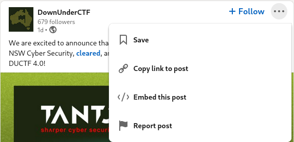

LinkedIn embeds
LinkedIn has an "Embed this post" option in the hamburger menu of some posts.

It generates some html code containing an /embed URL that you can chuck onto a webpage without pissing off the magic elves inside your reader's browser.
<iframe src="https://www.linkedin.com/embed/feed/update/urn:li:share:7101497133287047168" allowfullscreen="" title="Embedded post" width="504" height="459" frameborder="0"></iframe>
For some reason, this embed option doesn't exist on older posts, and embedding the "copy link to post" URL results in a chorus of pissed elf screeching.
For example,
<iframe src="https://www.linkedin.com/posts/chuanshu-jiang-25aa88184_a-big-thank-you-to-chuanshu-jiang-for-the-activity-7080300564386889729-X_Ss?utm_source=share&utm_medium=member_desktop" allowfullscreen="" title="Embedded post" width="504" height="375" frameborder="0"></iframe>
(Here come the elves)
I really wanted to get this embed thing working on an older post, so I had a nose around LinkedIn's feed API.
Solution
Turns out, you can actually reliably create an /embed link by using the post's activity ID, which follows activity- in the "copy link to post" URL.
For example,
Becomes
The second URL can be iframed, but the first one can't. I have no idea why the second URL exists, but voila.
I don't really have the time to figure out the rest of this API, and this blog isn't about LinkedIn scraping. Just throwing this onto the internet in case it can help someone stuck in a similar sitch.